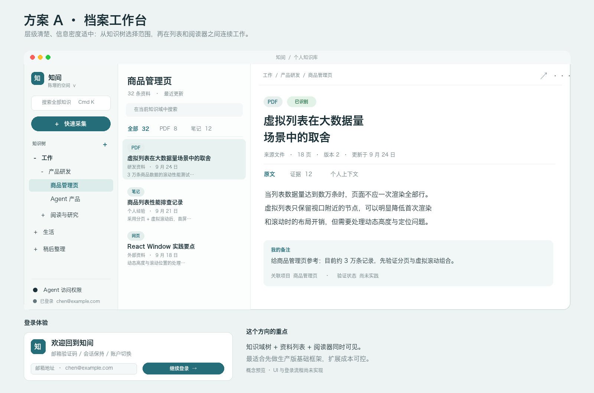

基于原生 macOS 的本地优先个人知识库。不只收纳碎片资料，更沉淀“为什么存”与“验证结论”；通过本地 MCP 协议，让 AI 助手精准调用你的真实实战经验。

固定三栏结构：左侧知识树与快速采集，中间多维度资料列表，右侧正文、段落级证据与个人实操备注。
为什么你存了 1000 篇干货，
遇到问题依然在抓瞎？
公网上的资料到处都是，但解决实际问题的，永远是你结合自身项目约束裁剪、并亲自踩坑验证过的**私有经验**。传统工具在这三个关键点上彻底失效了：
看到好文章随手丢进收藏夹，存了等于读了。两周后再找完全想不起关键词；好不容易翻出，文章已 404 或飞书权限已过期。
带动机归档：保存时关联项目与“为什么存”，离线保存排版与原图原件，永远可查。
未公开的项目踩坑记录、内部架构文档一旦传上云端，随时面临被爬取或泄露风险。断网直接无法阅读，还要忍受臃肿的 Electron 内存占用。
真·本地优先：原生 Swift 构建，免登录秒开，100% 数据在本地 Mac 硬盘，支持一键备份与导出。
外部 Agent（Cursor/Claude）很强，但它不知道你过去踩过什么坑。每次提问都要重复解释业务背景，得到的依旧是跑不通的“通用教科书废话”。
段落级证据 + 原生 MCP：Agent 敲代码时自动通过本地协议调阅你的真实经验，有据可查。
专为知识工作者与 Agent 时代打造的
四大核心支柱
不仅支持剪贴板文字、链接与 PDF/Word/Excel。更深度打通本机 lark-cli，一键抓取飞书云文档，完整保留 Markdown 格式，下载原件原图，并利用 macOS Vision 离线提取高精度 OCR。
严格区分“外部资料事实”、“AI 提炼建议”与“个人实操结论”。随手记录“为什么收藏”、“适用哪个项目”，以及实战后的“未尝试 / 已验证有效 / 部分有效 / 无效”。AI 提出的建议需用户显式确认才采纳，不擅自改写事实。
拒绝黑盒 RAG 的幻觉。结合关键词与本地向量混合检索，搜索结果不仅仅给你一段摘要，而是直接驱动阅读器高亮定位到正文最密集的证据段落或 PDF 对应页码。证据不足时明确告知，绝不胡编乱造。
内置安全的本地只读 MCP（Model Context Protocol）服务。无需暴露任何云端 API 凭证，Cursor、Claude Desktop 或 Antigravity 通过标准本地通道直连。当 Agent 接手复杂任务时，优先索引并引用你已验证过的经验。
3 步看懂：知问 如何为 Cursor 赋能
点击下方步骤，感受知识从“随手沉淀”到“被 Agent 敲代码时调用”的闭环：
你的知识，100% 留在你的 Mac 里
知问坚守最严苛的 Local-First 架构原则。我们绝不把你的私人思考、代码笔记作为云端商业模式的人质。
无需注册任何云端账户，无需手机验证码。安装后即可完整使用本地采集、检索与阅读。
所有原件、正文版本、证据与向量索引全部持久化在本地用户数据目录，断网秒开。
删除资料先安全进入本地回收站，避免误操作；永久清理彻底清除物理文件与索引。
随时一键打包导出全部 Markdown 正文、原始附件与图片，真正将数据主权交还于你。
macOS 14.0+ 原生支持 · 针对 Apple Silicon (M1/M2/M3/M4) 极致优化 · 免注册免费体验